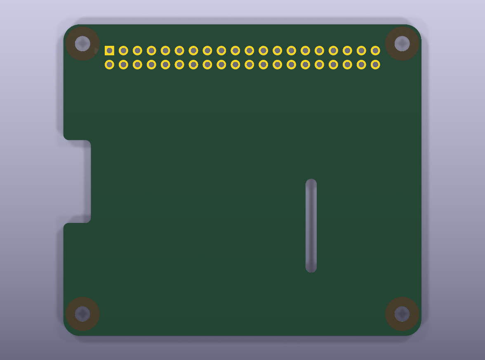

A KiCad 10 project template using the official classic full-size Raspberry Pi HAT geometry.

The interface is deliberately unwired. Add the mandatory identification EEPROM and application circuit, connect required pins, and mark only genuinely unused pins with no-connect flags.
A derivative is not automatically HAT- or HAT+-compliant. Verify the current electrical, EEPROM, spacing, model-clearance, marking, and documentation requirements before using either name for a finished board.
Source: WsprryPi PCB Designs. Repository license included as LICENSE.md.